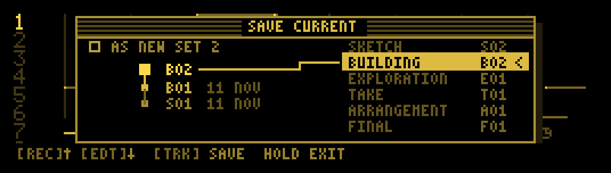
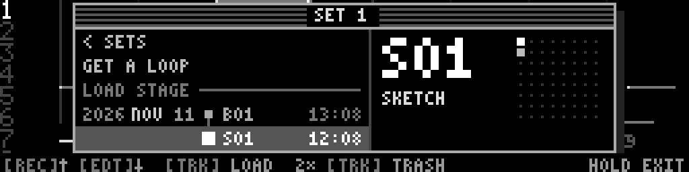

Keep the set you’re playing
Your current set holds eight MIDI tracks, each with eight loop slots. Autosave remembers your loops and undo history between sessions. To keep a version you can load after you’ve played more takes, save a milestone of the whole set.
- Put a microSD card in the Teensy’s built-in socket before powering up. Leave the transport stopped. Connect the Teensy to your computer over USB and open its serial monitor at 115200 baud.
- Send
!ENGINE approve-savingand press Enter. The looper remembers this choice on the card. RO means new recordings stay in memory. You’ll see it on a fresh card until you enable saving, or if the card was missing or unreadable at power-up. - Finish your take or leave NOTE_EDIT. Watch the four dots above the tempo. Dim dots mean a save is waiting. A moving dot means the looper is writing to the card. Four bright dots flash when the save is complete. A dimmer flash signals a failed save. In the sets browser, the save row reads UNSAVED or SAVED, with the time if the clock is set.
At power-up the looper restores the last saved version of each slot from /MidiLooper/engine/store.bin. This file takes about 1 GiB and holds recent and older undo steps. Saved milestones and the recovery checkpoint share a second 1 GiB file, /MidiLooper/library/library.bin. Allow room for both and leave the card in place until the save finishes.

Save a version of the whole set
The sets browser is available once the looper has opened the card’s library. If holding Next Track mutes the selected track instead, hold it again to restore the previous mute setting. Check the card and saving setup above. The USB serial command !ENGINE library reports whether the library is mounted.
- From the performance screen, hold Next Track. The SETS window opens with SAVE SET highlighted. Press TRK (the same Next Track button).
- In SAVE CURRENT, press REC to move up or EDIT to move down. Label this version as SKETCH, BUILDING, EXPLORATION, TAKE, ARRANGEMENT, or FINAL. Choose AS NEW SET to take the same loops in a different direction under a new set number.
- Press TRK once. For example, SAVED SET 2 T01 confirms the first Take in set 2. Saving another Take makes T02. You can still load T01.

Each milestone keeps all 64 slots, the selected track and slots, the tempo and the undo steps still in memory when you press Save. Older undo steps held only on the card are outside both milestones and recovery checkpoints. If you overdub again after saving, that performance becomes part of the current set. Hold a button to leave the browser.
Load a saved set
- Finish recording or overdubbing and leave NOTE_EDIT. Hold Next Track to open SETS.
- Under LOAD SET, use EDIT to move down to the set you want. Press TRK to see its saved stages, newest first.
- Under LOAD STAGE, check the stage number and date, then press TRK. The performance screen flashes LOADED SET with the set and stage you chose.

Loading a set replaces the loops and undo history on all eight tracks. Before switching, the looper saves one recovery checkpoint so you can return to the set you were playing. Send !ENGINE return in the USB serial monitor to recall it. The next set you load replaces that checkpoint. To keep a version for future sessions, save it as a milestone.
If the transport is running, the looper prepares the incoming loops and switches in time. Send !ENGINE switch-at bar to change sets on the next bar line, or !ENGINE switch-at loop to wait for the end of the selected track’s loop. If an incoming track needs more time to load, you may hear a gap of about one bar on that track.
Load one loop into a track and slot
- In your current set, select the track and slot where you want the loop to play. Open SETS, enter the set that holds the loop, choose GET A LOOP, then choose its saved stage.
- The rows are tracks. The columns are loop slots. NOTELEN moves up. The selected-track Play/Stop control (MIDI note 40 on channel 16) moves down. REC moves left and EDIT moves right. Pause on a filled slot to see its piano roll.
- Press TRK to AUDITION the loop. With playback stopped or the track muted, you can still see the preview. Move to another slot to end the audition.
- When the hint changes to USE, press TRK again. COPIED TO 2-1, for example, means the loop is now on track 2, slot 1. To go back, undo on that slot. You can still recall the original loop from the saved stage.
On this screen, PLY means note 40. The supplied DROID patch sends note 39 from its global Play/Stop button. To move down through the tracks, assign a spare pad to note 40 on channel 16, with Note On when pressed and Note Off when released.
The extra column on the left offers empty loops of different lengths. Choose a length and press TRK to load it. The looper asks for confirmation if the chosen track and slot already hold a loop.

Trash and restore saved stages
In a set’s stage list, double-press TRK on a milestone to move it to the trash immediately. On MOVE SET TO TRASH the same gesture moves every visible stage of that set. Watch for IN TRASH. Triple-press TRK immediately afterward to bring back the last stage or set you trashed.
To recover an earlier stage or set, open TRASH from the main sets list, highlight it and press TRK. The screen flashes RESTORED with the set or stage number. Confirming EMPTY TRASH permanently removes your ability to recall those stages. The library file still occupies the same space on the card, and its used space stays allocated.
If a set won’t save or load
- STOP THE TAKE FIRST or CLOSE THE EDIT FIRST means finish recording, overdubbing or note editing, then try again.
- BUSY means the looper is still using the card. Wait for it to finish. For LIBRARY NOT READY, check the card and first-time saving setup.
- LIBRARY FULL means there’s no room for this milestone. The looper checks the available space before saving.
- CHECKPOINT NOT WRITTEN means the current set is still loaded. If the looper cannot read the selected milestone, it tries to bring back your previous set from the checkpoint. SET NOT RESTORED means that also failed. Keep the card and check which saved stages you can still load before recording again.
How the looper stores undo history · Sets browser controls · Save and load in the firmware